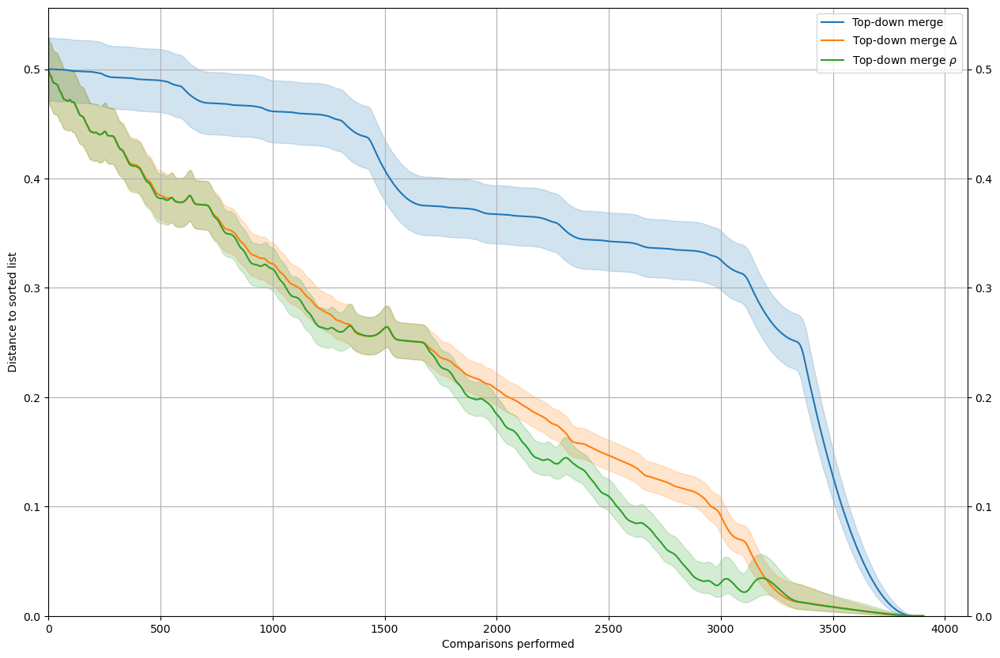
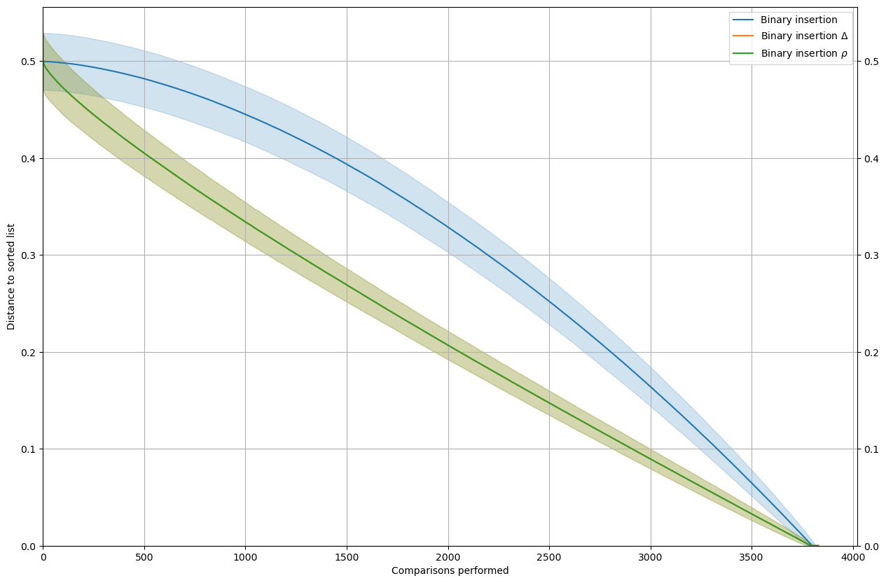
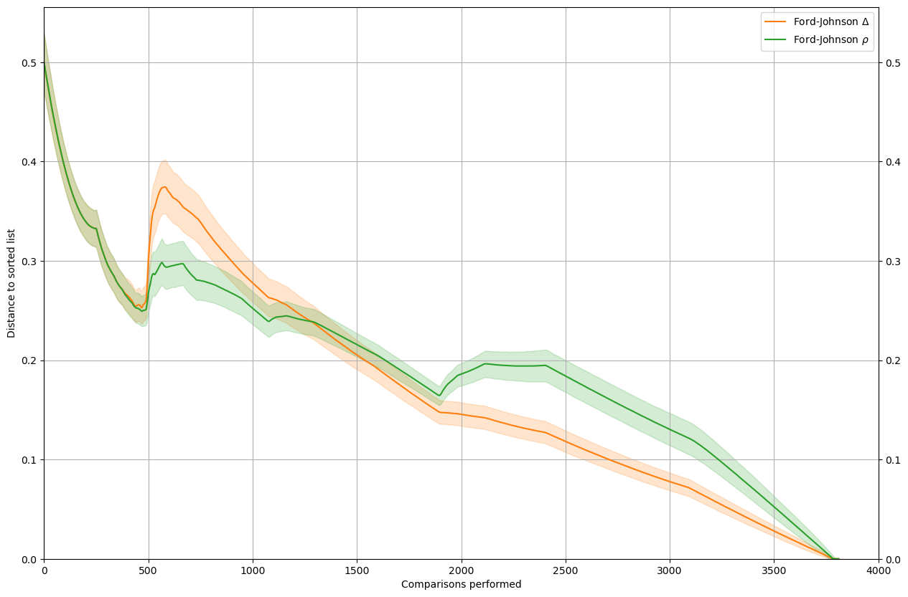
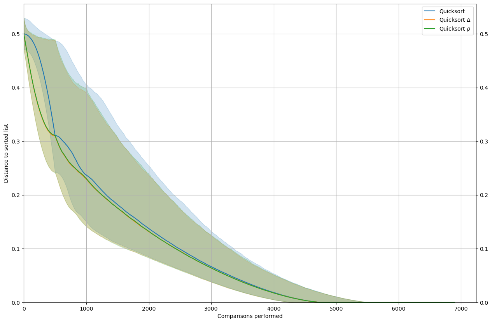
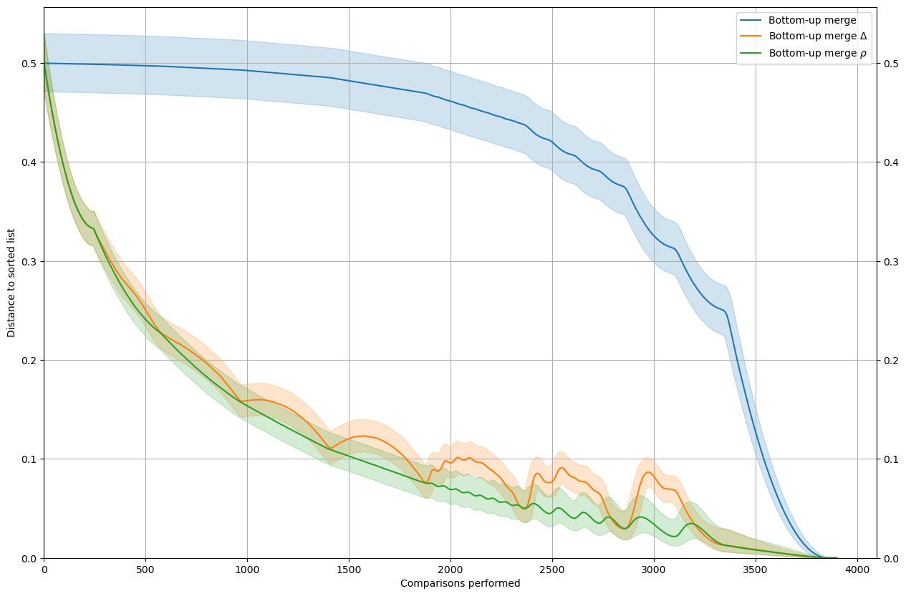
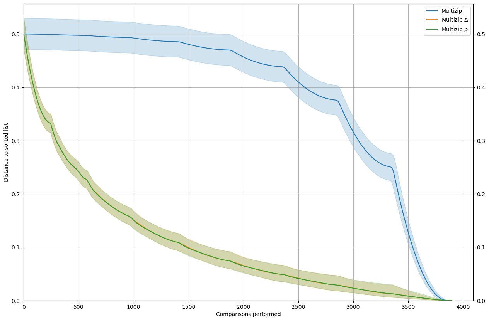

Impact of estimators
This notebook shows how to use the corsort package to compare natural estimators (if they exists) and the external estimators \(\Delta\) and \(\rho\).
Here the following sorts will be compared:
Top-down merge
Binary insertion
Ford-Johnson
Quicksort
Bottom-up merge
Multizip
The take-away is that, at least for the sort with a good performance profile, \(\rho\) is usually a better estimator than \(\Delta\).
First we load some packages.
[1]:
import numpy as np
from matplotlib import pyplot as plt
from multiprocess.pool import Pool
import dill as pickle
from pathlib import Path
from corsort import *
We write a script that does the computation and display.
[2]:
def rho_delta(MySort, leg, n, nt, natural=True):
name = MySort().__name__
sort_list = [MySort(compute_history=True),
WrapSortScorer(sort=MySort(), scorer=jit_scorer_delta, compute_history=True),
WrapSortScorer(sort=MySort(), scorer=jit_scorer_rho, compute_history=True)]
color_dict = auto_colors(sort_list)
legends = {name: leg,
f"{name}_delta": f"{leg} $\\Delta$",
f"{name}_rho": f"{leg} $\\rho$"}
if not natural:
sort_list = sort_list[1:]
legends.pop(name)
fn = Path(f"rho_delta_{name}_n_{n}_nt_{nt}.pkl")
if fn.exists():
with open(fn, 'rb') as f:
convergence = pickle.load(f)
else:
with Pool() as p:
convergence = evaluate_convergence(sort_list=sort_list, n=n, nt=nt, pool=p)
with open(fn, 'wb') as f:
pickle.dump(convergence, f)
m = n*(n-1)/2
fig = plt.figure(figsize=(15, 10))
ax = plt.axes()
decim=5
for name in legends:
ref = convergence[name]
color = color_dict[name]
p_m = ref.shape[1]
x = np.arange(p_m)[::decim]
ref = ref[:, ::decim]
q = np.zeros((5, ref.shape[1]))
for i, per in enumerate([2.5, 50, 97.5]):
q[i, :] = np.percentile(ref, per, axis=0)
q = q/m
ax.plot(x, q[1, :], label=legends[name], color=color)
ax.fill_between(x, q[0, :], q[2, :], alpha=.2, color=color)
plt.legend()
plt.grid()
ax.tick_params(labelright=True, right=True)
plt.ylabel('Distance to sorted list')
plt.xlabel('Comparisons performed')
plt.ylim([0, None])
plt.xlim([0, None])
plt.show()
[3]:
n=500
nt=10000
[4]:
rho_delta(MySort=SortMergeTopDown, leg="Top-down merge", n=n, nt=nt)

[5]:
rho_delta(MySort=SortBinaryInsertion, leg="Binary insertion", n=n, nt=nt)

[6]:
rho_delta(MySort=SortFordJohnson, leg="Ford-Johnson", n=n, nt=nt, natural=False)

[7]:
rho_delta(MySort=SortQuick, leg="Quicksort", n=n, nt=nt)

[8]:
rho_delta(MySort=SortMergeBottomUp, leg="Bottom-up merge", n=n, nt=nt)

[9]:
rho_delta(MySort=SortMultizip, leg="Multizip", n=n, nt=nt)
